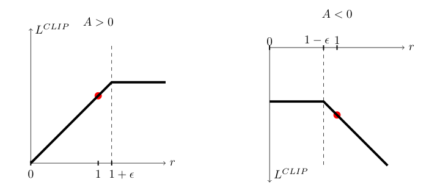

Tested on Atari and robots in 2017, PPO now tunes billion-parameter models
Its one durable idea is a clip that keeps a policy update from overshooting, and the trust that the method aligns language models was built entirely by later papers.
Why this matters
Proximal Policy Optimization is the reinforcement-learning method OpenAI, DeepSeek, and most labs training a chat model reach for when they tune it against human feedback. It is the RL in RLHF. Yet the 2017 paper that introduced it taught a simulated robot to walk and a program to play Atari, and it proved none of what the method is now trusted to do. This lesson teaches the one idea the paper is built on, the clipped objective, through a worked example you can check by hand. Then it separates what the paper measured in 2017 from what the field later decided to believe about PPO.
- 01
- Two more papers turned a robot's backflip trick into InstructGPT's training recipe: where the reward-from-human-preferences idea that PPO optimizes in RLHF came from.
- 02
- A 1.3B model beat GPT-3 on the one metric OpenAI trained it to win: the three-step RLHF recipe that made PPO the standard alignment optimizer.
- 03
- DPO turns preference tuning into a single classification loss: the method that removes PPO from preference tuning, covered here from the other side.
PPO exists to make TRPO unnecessary
A reinforcement-learning agent learns by trial and error. It follows a policy, a rule that reads the current situation and assigns a probability to each action it might take. It collects a batch of experience by acting on that policy, then nudges the policy toward the actions that paid off. The nudging is gradient ascent, the hill-climbing that trains a neural network, run on the policy's parameters.
Collecting experience is expensive, so you would like to take several gradient steps on each batch before discarding it. Every step changes the policy. Once it has moved, the batch was collected under a policy that no longer exists. Push too far and the update is optimizing against stale data, and the policy can collapse.1
Trust Region Policy Optimization, from the same lead author two years earlier, solved this with a guarantee. TRPO maximizes the expected improvement subject to a hard constraint: the new policy may not diverge too far from the old one. It measures that distance by KL divergence, a standard measure of how far apart two probability distributions are. Stay inside that trust region and each update is provably at least as good as the last.2 The guarantee is real. The cost is that enforcing it needs a second-order optimization, estimating the curvature of the constraint by conjugate gradients. That is intricate to implement, and it does not drop cleanly into code built for ordinary gradient descent.1
PPO keeps the goal and drops the hard constraint and the second-order solve. Its question is whether a first-order method, plain gradient ascent and nothing more, can hold the update inside a trust region on its own. The answer the paper gives is the clipped objective.1
Clipping the ratio removes the reason to overshoot
Two numbers describe a single action the agent took. The first is the advantage: how much better the action turned out than the policy expected from that state on average, positive when it beat expectation and negative when it fell short.1 The second is the probability ratio, written r: the probability the current policy assigns to the action divided by the probability the old policy, the one that collected the batch, assigned to it. At the start of an update the two policies match, so r equals 1. As the update makes the action more likely, r climbs above 1; as it makes the action less likely, r drops below 1.1
The obvious objective multiplies the two: r times the advantage. Maximizing it makes good actions more likely and bad ones less likely, which is right in direction and unbounded in size. Nothing stops the update from driving r to 5 or 50 to bank a large positive advantage, the exact runaway the trust region existed to stop.1
PPO's fix is one line, and it is the idea the whole paper rests on.
- r_t(\theta)The probability ratio: the new policy's probability for this action over the old policy's. It is 1 when the update begins.
- \hat{A}_tThe advantage: how much better the action was than the policy's baseline expectation.
- \operatorname{clip}The clip: holds the ratio inside 1−ε to 1+ε, which is 0.8 to 1.2 at ε = 0.2.
- \minTakes the smaller product, so a ratio pushed past the clip earns nothing more.
Read it from the inside. The clip holds r inside the interval from 1 minus epsilon to 1 plus epsilon. The paper recommends epsilon equal to 0.2, so the ratio is pinned to 0.8 through 1.2.1 The objective then takes the smaller of two products: the true ratio times the advantage, and the clipped ratio times the advantage. The minimum is what makes it pessimistic, crediting the update with the less favorable reading.1
Work one action through it. Take a good action with advantage +2. Suppose the update has already made it 1.5 times as likely as before, so r is 1.5, past the 1.2 ceiling. The true product is 1.5 times 2, or 3.0. The clipped product pins r at 1.2, giving 2.4. The objective is the smaller of the two, 2.4. That same 2.4 is what the update scores at r equal to 1.2, to 3, or to 50. Once r crosses the ceiling the score stops rising, the gradient goes flat, and the update has no reason to push r further.1
| Advantage A | Ratio r | r · A | clip · A | min | What the minimum does |
|---|---|---|---|---|---|
| +2 | 1.5 | 3.0 | 2.4 | 2.4 | Capped. Past the ceiling the score stops rising; no reward for pushing r higher. |
| +2 | 0.5 | 1.0 | 1.6 | 1.0 | Uncapped. The step made a good action less likely, so the full gradient pulls back. |
| -2 | 0.5 | -1.0 | -1.6 | -1.6 | Capped. Past the floor the score stops rising; no reward for suppressing r further. |
| -2 | 1.5 | -3.0 | -2.4 | -3.0 | Uncapped. The step made a bad action more likely, so the full penalty applies. |
The clip is one-sided on purpose: it only removes the reward for moving further in the direction the advantage already favors. When a step moves the wrong way, the minimum picks the unclipped product and the full corrective gradient survives. The paper draws both cases.

Because the objective flattens the moment a step would carry the policy past the trust region, the policing TRPO did with a hard constraint falls out of the objective itself. That is what lets PPO reuse a batch. The paper runs ten gradient epochs over each batch of MuJoCo experience, ten passes that would blow up an unclipped objective, and the clip absorbs the excess.1
Every number came from robots and Atari games
The paper's evidence is two benchmark suites, both small next to the models PPO now trains. The first is seven MuJoCo continuous-control tasks, simulated robots learning to walk, hop, and swim, each run for one million timesteps.1 The second is 49 Atari games.1 No language, no text. The method that now tunes 175-billion-parameter language models3 was, in the paper, measured on a simulated cheetah learning to run.1
On the robots, clipping earns its place. The paper sweeps the clip width and scores each setting on a scale where a random policy is 0 and the best result is 1. No clipping at all scores minus 0.39, worse than random. Epsilon equal to 0.2 scores 0.82, the best of any setting tried.1 Without the clip, the objective is actively bad.
Atari is where the tidy story breaks. The paper scores the 49 games two ways. By average reward across all of training, which rewards fast learning, PPO wins 30 games to ACER's 18. By average reward over the last 100 episodes, which rewards the final policy, the order reverses: ACER wins 28 to PPO's 19.1 PPO learns faster and finishes second. The abstract says only that on Atari, PPO performs "similarly to ACER though it is much simpler."1 A lesson that says PPO swept the benchmarks has read the first scoring and skipped the second.
The paper convinces without proving
For a paper this influential, it proves remarkably little. TRPO came with a theorem; PPO comes with an intuition and a set of experiments. The paper calls its objective a "lower bound," a "pessimistic bound" on the naive one, not an optimum.1 It says the clipped objective "emulates" TRPO's monotonic improvement rather than achieving it.1 It picks its central constant with a shrug: the paper writes "where epsilon is a hyperparameter, say, ε = 0.2." The constants in its alternative KL-penalty version it calls "chosen heuristically."1 None of this is hidden; it is all on the page. But a reader who wants a proof that PPO stays inside the trust region will not find one.
Later work turned that gap into a sharper claim: PPO's edge may not come from the clip at all. Engstrom and coauthors reimplemented PPO and TRPO and isolated the "code-level optimizations," adjustments that live in released implementations or pass as auxiliary details rather than in the objective. They found these are "responsible for most of PPO's gain in cumulative reward over TRPO."4 A companion catalog counted 37 implementation details needed to reproduce PPO's results, most nowhere in the clipped objective the paper is known for.5 The objective is real, and it is what people mean by PPO. Whether it, rather than years of accumulated engineering, is what won PPO its benchmarks is a question the paper does not settle.
The optimizer found a second life tuning language models
None of what makes PPO famous now is in the 2017 paper. The bridge to language models was built afterward, one paper at a time.
The first crossing came in 2019. Ziegler and coauthors at OpenAI fine-tuned a 774-million-parameter GPT-2 with PPO. The reward was no longer a game score. It came from a reward model trained to predict which of two text continuations a human would prefer. To stop the policy from drifting into text that merely gamed that reward, they added a penalty for straying too far from the original model, measured again by KL divergence.6 That setup became the template. InstructGPT, in 2022, ran the same three-step recipe at 175 billion parameters, and its reinforcement-learning step is PPO by name.3 That is the lineage that made "PPO" a word used daily by people who have never seen a MuJoCo robot.
The lineage is also being routed around, in two directions. Direct Preference Optimization, in 2023, replaced the whole reward-model-then-PPO loop with a single classification-style loss over preference pairs, with no reinforcement learning at all. It keeps the objective PPO was optimizing and drops the optimizer.7 Group Relative Policy Optimization, introduced with DeepSeekMath in 2024, went the other way. It keeps PPO's clipped ratio exactly but discards the value network, the second model PPO trains to estimate the advantage, often as large as the policy itself. GRPO estimates that baseline from a group of sampled answers to the same question instead. Dropping the value network removed a model "of comparable size as the policy," a real saving in memory and compute.8 GRPO is the algorithm DeepSeek used to train its R1 reasoning model, in active use as of early 2025.9
The clipped objective from 2017 still runs inside the largest training pipelines. But "PPO is how you align a model" is a belief the field assembled after the paper, on tasks the paper never ran. It is already being taken apart: DPO dropping the reinforcement learning, GRPO dropping the value network, both from people asking which parts of PPO were ever doing the work.
The takeaway
PPO's lasting idea is small and checkable. Take the smaller of the real and the clipped advantage-weighted ratio, and a policy update loses its reason to leave the trust region, so one batch of experience can feed several gradient steps without the policy running away. That was shown in 2017 on seven simulated robots and 49 Atari games, with no proof underneath it and a record that was strong but not a clean sweep. Everything beyond that came later. PPO now aligns billion-parameter language models and is the default optimizer to reach for. But that standing is trust the field extended on tasks the paper never touched, and it is already being re-examined. When you read that a model was "trained with PPO," you are reading about a 2017 clip doing a job it was never tested for, wrapped in years of engineering the paper never described.
- 01
- Sutton and Barto, Reinforcement Learning: An Introduction: the standard text, for the policy-gradient foundations the paper assumes.
- 02
- The 37 Implementation Details of Proximal Policy Optimization: a line-by-line account of everything a working PPO needs that the paper leaves out.
- 03
- DeepSeekMath (Shao et al., 2024): introduces GRPO, the PPO variant now training reasoning models.
Sources
- arXiv · Schulman et al., Proximal Policy Optimization Algorithms (2017)
- arXiv · Schulman et al., Trust Region Policy Optimization (2015)
- arXiv · Ouyang et al., Training Language Models to Follow Instructions with Human Feedback (2022)
- arXiv · Engstrom et al., Implementation Matters in Deep Policy Gradients: A Case Study on PPO and TRPO (2020)
- ICLR Blog Track · Huang et al., The 37 Implementation Details of Proximal Policy Optimization (2022)
- arXiv · Ziegler et al., Fine-Tuning Language Models from Human Preferences (2019)
- arXiv · Rafailov et al., Direct Preference Optimization: Your Language Model is Secretly a Reward Model (2023)
- arXiv · Shao et al., DeepSeekMath: Pushing the Limits of Mathematical Reasoning in Open Language Models (2024)
- arXiv · DeepSeek-AI, DeepSeek-R1: Incentivizing Reasoning Capability in LLMs via Reinforcement Learning (2025)